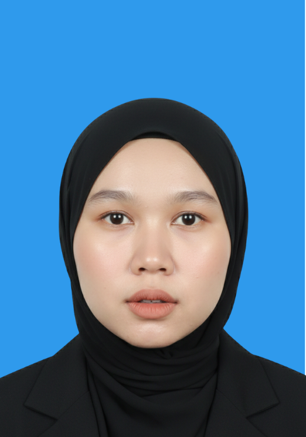

FAQ AI Chatbot (PoC)
Python • LlamaIndex • RAGBuilt a Retrieval-Augmented Generation (RAG) chatbot for public sector FAQ data. Features vector store indexing, custom query engine, admin portal, and email alerts.
Hello, It's Me
Data Science specialist with hands-on experience in machine learning pipelines, predictive analytics, and real-time data engineering solutions.

A quick overview of my background, experience, and what I bring as a data professional.
I am an emerging data professional with practical experience across Data Engineering, Data Operations, and Predictive Analytics.
Technologies and strengths I use to build real-world data pipelines and analytics solutions.
I build scalable data pipelines using PySpark and Kafka, manage cloud databases with Snowflake, and deploy predictive ML models and RAG applications in Python.
Strong in:
Programming Languages:
Frameworks, Data Eng & Analytics:
Databases:
Tools & Cloud:
Hands-on experience in data engineering, predictive modeling, and data operations.
April 2026 – Present
✔ Production Data Streaming, ML Forecasting & Enterprise PoCs
May 2023 – January 2024
✔ Inventory Quality Control & Customer Trend Analytics
Certifications and achievements that demonstrate my technical and academic capabilities.
Industry-recognized badges and professional credentials in cloud and programming.
Academic achievements and awards from competition and coursework excellence.
Selected projects that highlight my experience in data pipelines, machine learning, and AI search platforms.
Built a Retrieval-Augmented Generation (RAG) chatbot for public sector FAQ data. Features vector store indexing, custom query engine, admin portal, and email alerts.
Built and evaluated multivariate time-series models on historical vehicle sales (2010–2024) utilizing feature engineering and lag variables to improve predictions.
Full-stack financial analytics dashboard rendering real-time profit & loss metrics across regions, equipped with relational schema and custom D3.js charts.
Centralized platform replacing spreadsheet tracking for 100+ employees. Automated CPE point calculation logic, reducing processing time by 80%.
Key highlights that make me a strong data candidate.
A goal-oriented Data Science student with hands-on experience in production data engineering, enterprise RAG development, and predictive modeling.
Actively seeking Data Engineer, Data Analyst, and Data Scientist opportunities starting late 2026.
Email: nurezyfathia@gmail.com
Phone: +60 14-716 8223
Location: Jenjarom, Selangor, Malaysia
LinkedIn: linkedin.com/in/ezy-fathia-854548262
GitHub: github.com/nurezyfathia-ezy
Resume: 📄 Download Resume
I’m available for interviews and discuss upcoming roles. Let’s connect!
Open to roles: